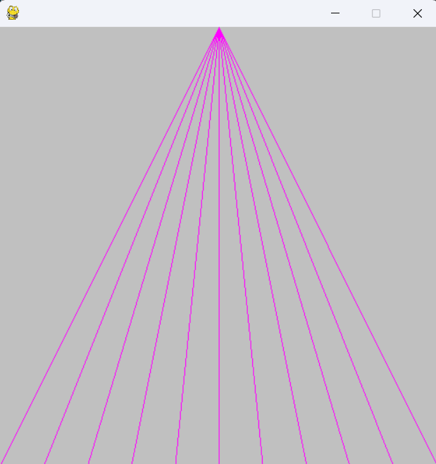
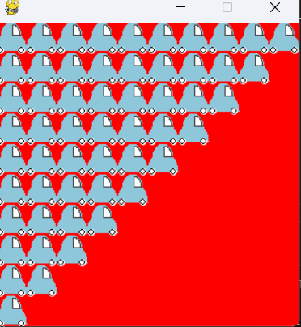
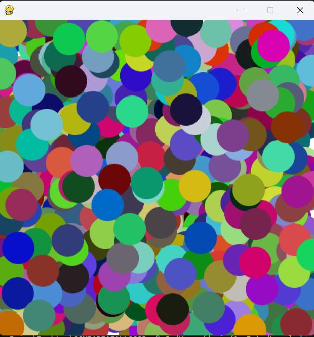
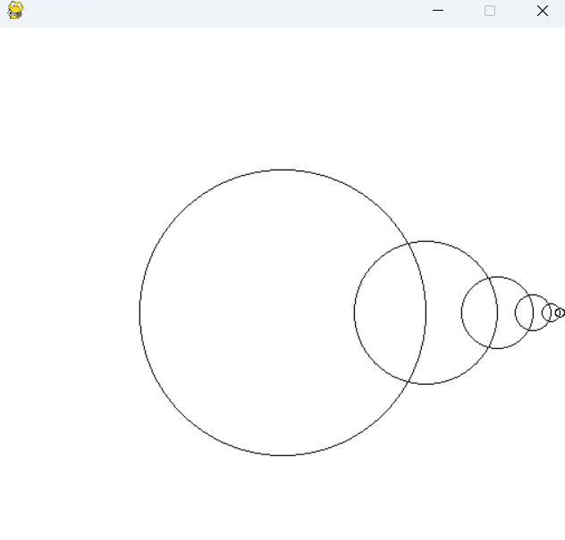

Daniel Kaplan's Gallery
Navigation
Home
About Me
Contact
Projects
Gallery
Gallery of 1
st
year dudraw


Figure 1
:
DUdraw lines that converge at the top of the canvas.
Figure 2
:
Custom DUdraw car class drawn in a triangular fashion.


Figure 3
:
DUdraw randomly drawn and randomly placed circles on the canvas.
Figure 4
:
DUdraw circles drawn in a recursively smaller fashion.